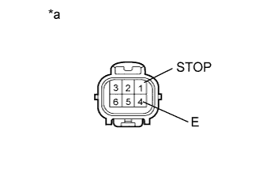
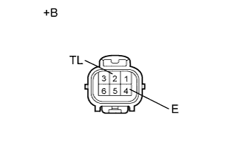

ЗАДНИЕ БЛОКИ ФОНАРЕЙ В СБОРЕ > ПРОВЕРКА |
| 1. ПРОВЕРЬТЕ КОЛПАК И КОРПУС ЛЕВОГО ЗАДНЕГО БЛОКА ФОНАРЕЙ |
|  |
Проверьте стоп-сигнал.
Подайте напряжение аккумуляторной батареи на разъем и проверьте состояние светодиода.
| Условия измерений | Заданные условия |
| Положительный (+) вывод аккумуляторной батареи → 1 (STOP) Отрицательный (-) вывод аккумуляторной батареи → 4 (E) | Светодиод светится |
| *a | Устройство с неподсоединенным жгутом проводов (Колпак и корпус заднего блока фонарей) |
|  |
Проверьте задний фонарь.
Подайте напряжение аккумуляторной батареи на разъем и проверьте состояние светодиода.
| Условия измерений | Заданные условия |
| Положительный (+) вывод аккумуляторной батареи → 2 (TL) Отрицательный (-) вывод аккумуляторной батареи → 4 (E) | Светодиод светится |
| *a | Устройство с неподсоединенным жгутом проводов (Колпак и корпус заднего блока фонарей) |